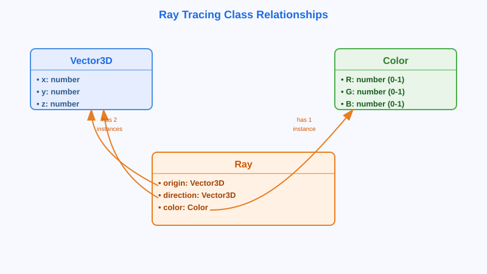

Having explored the fundamental concepts of light, color perception, and digital color representation, we now turn to the practical question of how to structure a ray tracing program. The object-oriented approach provides a natural way to model the components of a ray tracing system.
In order to implement ray-tracing, we will need to start by defining what a "ray" is and use that understanding to define a class that encapsulates that understanding. For our purposes, a ray is meant to refer to a ray of light and, in that sense, it will have:
It turns out that vectors, specifically 3-dimensional vectors, serve as an ideal model for both the point of origin and the direction. (Note that "vector" here refers to the mathematical sense of vector, not the graphics formatting sense referred to in the previous pages.) We will spend more time on vectors on subsequent days, particularly Day 13 but, for now, just know that a 3D vector can represent a point in a 3D space or a direction in a 3D space.
For the color of a ray, we will also need a class. This class will encapsulate the three component intensities (red, green, and blue) that make up a color in "RGB color space". However, we will vary from the usual practice of using 8-bit integer values for representing these colors. In stead of integers ranging from 0 to 255 to represent each primary color component, we will use floating point numbers from 0.0 to 1.0, where 1.0 to "full" intensity. However, these values are not actually capped at 1.0, as it can be useful to allow intensities above 100%. (For example, 1.0 might equate to the RGB values of a white piece of paper, whereas something like 200000.0 might be used to describe the color of the sun.)

Class relationship diagram showing the structure of our core classes. The Ray class contains two Vector3D instances (origin and direction) and one Color instance, while Vector3D and Color each encapsulate three numerical values.
(You might have noticed that both the Vector3D and Color classes are encapsulations of three floating point numbers. One could chose to use the same class for both. However, while there is some overlap, the functionalties and behaviors of vectors and colors are fundamentally different, so it makes sense to implement separate classes and to include in those distinct classes the methods applicable to their distinct purposes.)